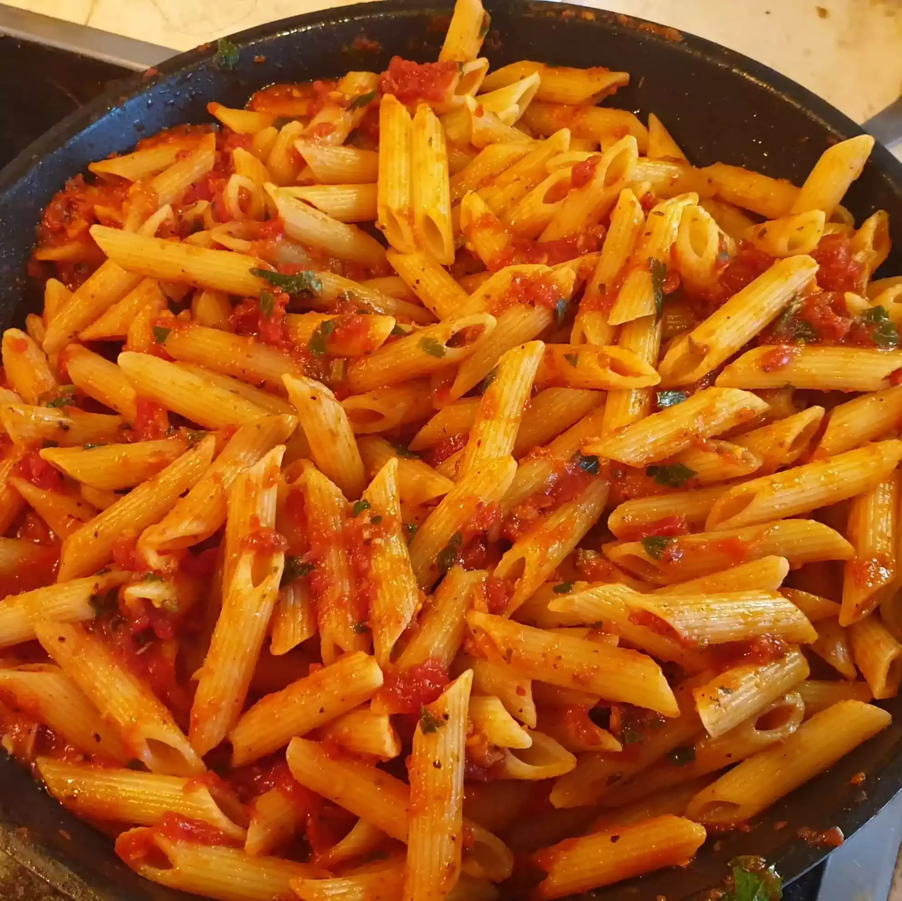

Pasta Arrabbiata

About the Dish
Arrabbiata sauce, or sugo all'arrabbiata in Italian, is a spicy sauce for
pasta made from garlic, tomatoes, and dried red chili peppers cooked in
olive oil. The sauce originates from the Lazio region, and particularly
from the city of Rome.
- Pasta
- Olive oil
- Chilli flakes or diced chilli peppers
- Crushed garlic cloves
- Crushed tomatoes (about 800 gramms for 500 gramms of pasta)
- Chopped parsley
-
Grated Pecorino Romano or Parmigiano Reggiano (optional, but highly
recommended)
How to make
- Start heating up water for the pasta.
- Heat up a few tablespoons of olive oil over low heat.
-
Crush several cloves of garlic into the olive oil, add the chilli flakes
or chilli peppers and fry them for a short time, while being careful not
to burn the garlic.
-
Add your crushed tomatoes, together with some salt and pepper, increase
the heat to medium and let simmer for 10-15 minutes or until it looks
nicely thickened.
-
When the water starts boiling, put a handful of salt into it and then
your pasta of choice. Ideally leave the pasta slightly undercooked,
because it will go in the hot sauce and finish cooking there.
-
When the sauce is almost ready, add most of your chopped parsley and
stir it around. Save some to top the dish later.
-
When the pasta is ready (ideally at the same time as the sauce or
slightly later), strain it and add it to the sauce, which should be off
the heat. If the sauce looks a bit too thick, add some of the pasta
water. Mix well.
- Add some of the grated cheese of your choice and stir it in.
- Serve with some more grated cheese and chopped parsley on top.